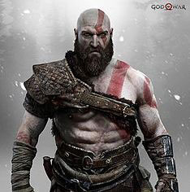

The game's protagonists are Kratos (voiced by Christopher Judge) and his young son Atreus (Sunny Suljic). Kratos is a warrior originally from Sparta who became the Greek God of War and is a son of Zeus. After ending up in ancient Norway, he met his second now deceased wife, Laufey (addressed as Faye). She bore their son, Atreus, who does not know about Kratos' past or his divine nature but can hear other beings' thoughts. The main antagonist is the Æsir god Baldur (Jeremy Davies), the brother of Thor, whose sons Modi and Magni (Nolan North and Troy Baker, respectively) assist him. His parents are Odin and the Vanir goddess Freya (Danielle Bisutti). Freya tried leaving Odin, as she did not truly love him. Odin had her banished to Midgard, after which she became known as the Witch of the Woods. To protect her son from a prophecy that foretold his death, Freya cast a spell of immortality on Baldur, which also caused him not to feel pain or pleasure. He resented her for this. The only thing she could not prevent from breaking the spell was mistletoe, which she kept secret. Other characters include Mímir (Alastair Duncan), who claims to be the smartest man alive, and the Huldra Brothers—Brok (Robert Craighead) and Sindri (Adam J. Harrington)—dwarves who appear at various points in the world and assist Kratos and Atreus with forging for new gear. Their weapons, including Thor's hammer Mjölnir, were used by the Æsir gods. They had also forged Kratos' Leviathan Axe, which originally belonged to Faye, who also gifted Kratos her Guardian Shield. The spirit of the Greek goddess Athena (Carole Ruggier) makes a cameo appearance, and Zeus (Corey Burton) appears as an illusion to Kratos in Helheim.
titill right

God of War received universal acclaim for its narrative, world design, art direction, music, graphics, characters, and combat system. Many reviewers felt it had successfully revitalized the series without losing the core identity of its predecessors. It received a number of perfect review scores, tying it with the original God of War (2005) as the highest-rated game in the series, as well as one of the highest-rated PlayStation 4 games of all time on the review aggregator Metacritic. Among other awards and nominations, God of War was awarded Game of the Year by numerous media outlets and award shows. The game performed well commercially, selling over five million copies within a month of its release and over 10 million by May 2019, making it one of the best-selling PlayStation 4 games. A novelization was released in August 2018, followed by a four-issue prequel comic series published from November 2018 to February 2019.